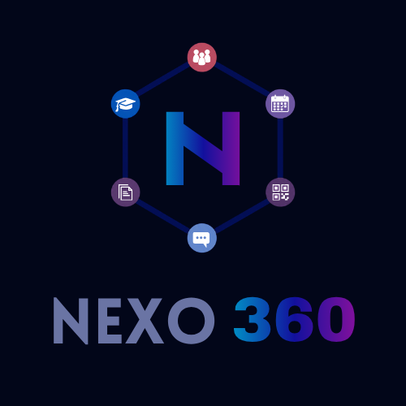

Portal
Actividades por fecha, entregas, avisos, cursos, materiales y chat.
NEXO 360 centraliza actividades, Diario Pedagógico, asistencia por QR, notas, permisos, eventos escolares y Movimiento Juventud.

Actividades por fecha, entregas, avisos, cursos, materiales y chat.
Períodos, contenido visto, tareas, observaciones y alertas técnicas.
QR permanente del estudiante y QR independiente por permiso.
Registro manual o por cámara, justificaciones, conducta y sanciones.
Zona, parciales, examen final, bimestres y promedios.
Inscripciones, comisiones, croquis, inventarios y presupuestos.
Esta página consulta automáticamente la versión más reciente publicada en GitHub Releases.
Cargando archivos…